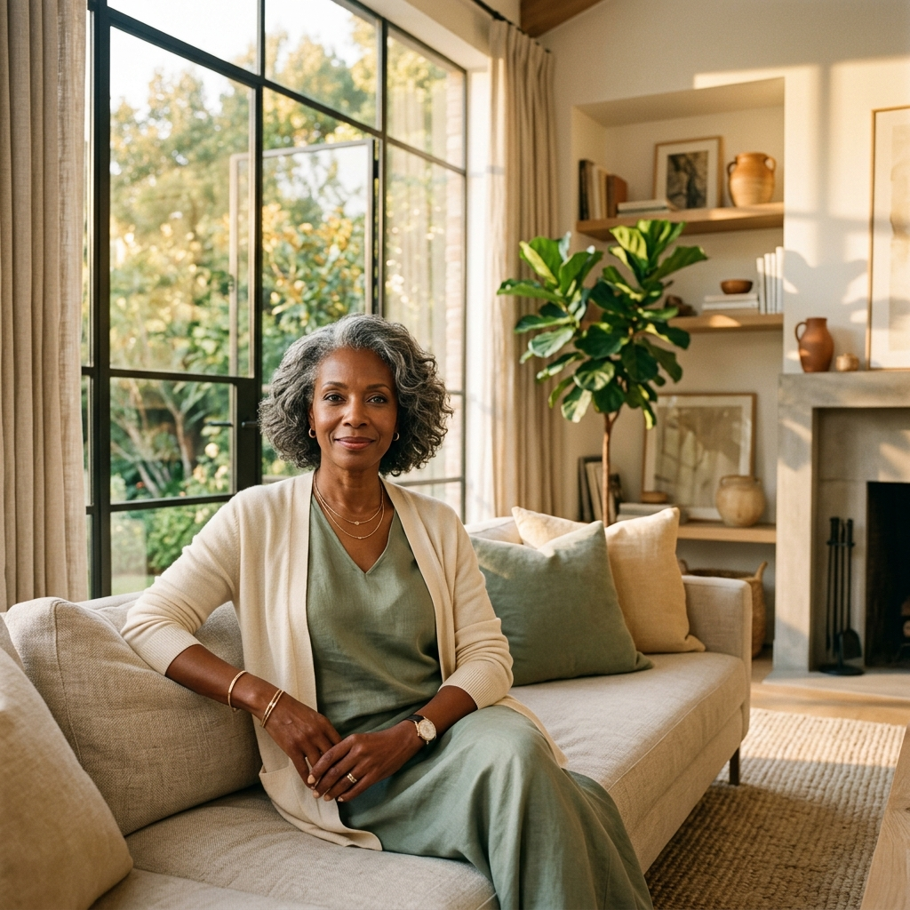
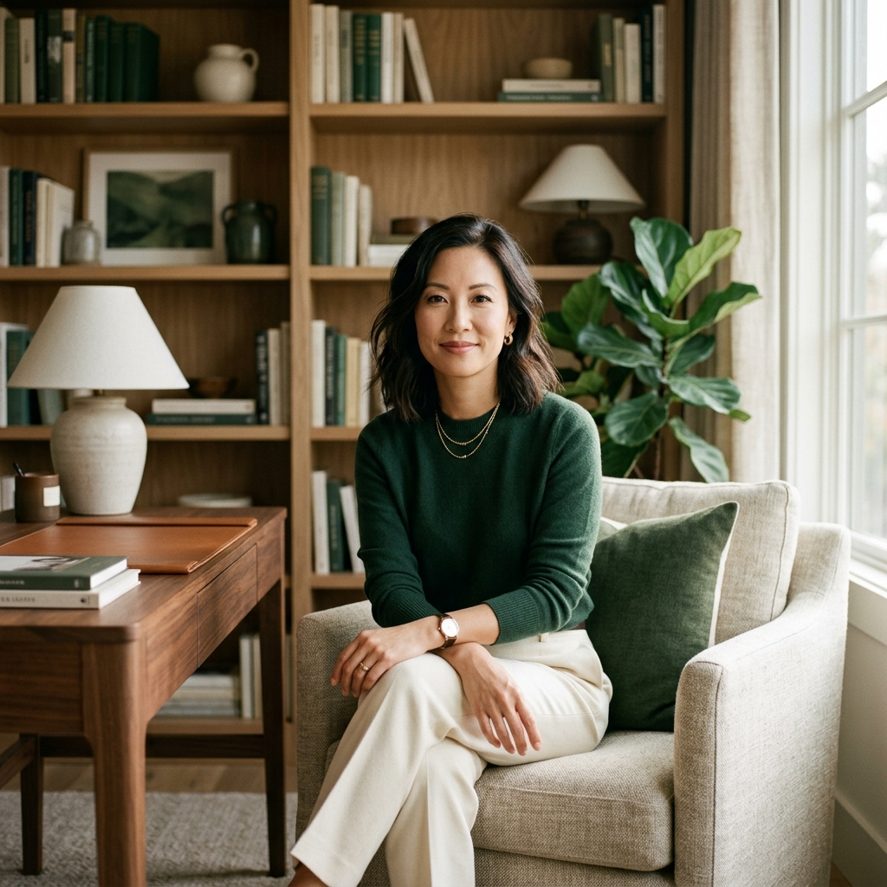

Beyond the Balance Sheet
Redefining what it means to inherit more than just capital.

"True stewardship begins where entitlement ends."
— Sarah J., Advisor
Complexity requires a sequence. We guide you through a deliberate process designed to minimize risk and maximize clarity during high-stakes transitions.
The Maeve StandardImmediate tactical support to stop the overwhelm. We audit your current position and secure your foundation through clinical precision.
Deep dive into the implications of your transition. Data-driven modeling meets personal values alignment to define your next chapter.
Execution of the long-term strategy. Ensuring your legacy and future state remain resilient against volatility and aligned with your intent.
Our editorial lens on wealth, legacy, and the emotional intelligence required for stewardship.
Redefining what it means to inherit more than just capital.

Developing the psychological infrastructure to lead your legacy.
Navigating the first twelve months of sudden financial responsibility.